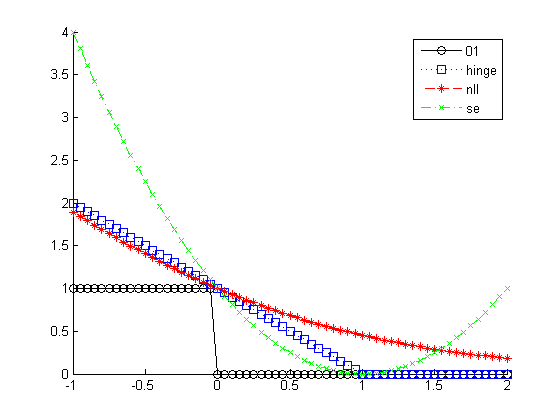

Hinge loss illustration
% This file is from pmtk3.googlecode.com y = 1; eta = -1:0.05:2; z = y*eta; L01 = double(sign(z)<0); Lhinge = max(0,1-z); Lnll = log(1+exp(-z))/log(2); Lse = (y-eta).^2; figure; hold on plot(z, L01, 'k-o'); plot(z, Lhinge, 'b:s'); plot(z, Lnll, 'r--*'); plot(z, Lse, 'g-.x'); legend('01','hinge','nll','se')